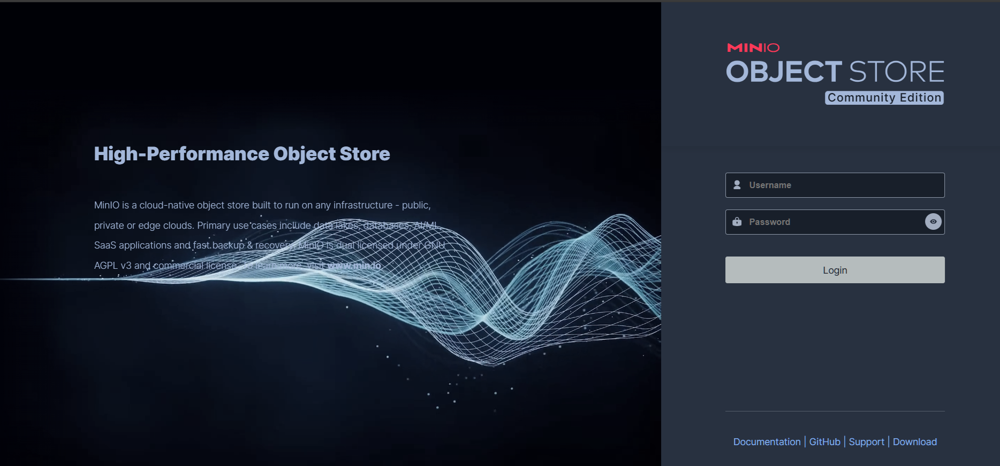
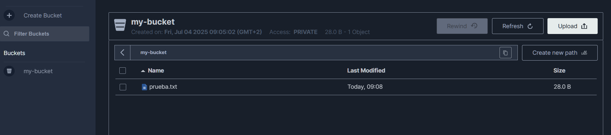

Este documento describe cómo instalar y configurar MinIO con contenedores.
Antes de comenzar, asegúrate de lo siguiente:
Puedes utilizar el script de
docker_install.shde la carpeta/resourcespara instalar ambas cosas en WSL/Ubuntu.
9000 (API) y 9001 (consola) están disponibles en tu máquina anfitriona.Crea un archivo docker-compose.yml para definir el servicio de MinIO, incluyendo puertos, variables de entorno, volúmenes y el comando para ejecutar el servidor. Tambien puedes usar el fichero pregenerado de la carpeta resources/minio/ Este enfoque asegura consistencia entre plataformas.
minio-compose.yml
services:
minio:
image: minio/minio:latest
container_name: minio
ports:
- "9000:9000"
- "9001:9001"
environment:
- MINIO_ROOT_USER=admin
- MINIO_ROOT_PASSWORD=admin123
volumes:
- minio_data:/data
command: server /data --console-address ":9001"
healthcheck:
test: ["CMD", "curl", "-f", "http://localhost:9000/minio/health/live"]
interval: 30s
timeout: 20s
retries: 3
minio-client:
image: minio/mc:latest
container_name: minio_client
depends_on:
minio:
condition: service_healthy
entrypoint: ["/bin/sh", "-c"]
command: >
"mc alias set myminio http://minio:9000 admin admin123;
tail -f /dev/null"
volumes:
- minio_client_data:/root/.mc
volumes:
minio_data:
minio_client_data:
minio/minio:latest para la versión más reciente de MinIO y minio/mc:latest para el cliente MinIO.minio y minio_client para referencia sencilla.9000 (API) y 9001 (consola) del host a los del contenedor MinIO.admin/admin123). Cámbialas en producción por seguridad.minio_data y minio_client_data para evitar pérdida de datos./data como directorio de almacenamiento y la consola en el puerto 9001. El cliente configura un alias myminio y permanece activo.Inicia los contenedores de MinIO y el cliente usando Docker Compose. Este comando descarga las imágenes (si no están descargadas), crea los volúmenes y arranca los servicios.
docker-compose up -d
-d ejecuta los contenedores en segundo plano (modo detach).Verifica que los contenedores estén en ejecución:
bash
docker ps
Deberías ver dos contenedores: minio con los puertos 9000 y 9001 mapeados, y minio_client.
En la carpeta resources/minio/ tienes un Makefile preparado para gestionar MinIO fácilmente:
MINIO_COMPOSE=docker-compose.yml
up:
docker compose -f $(MINIO_COMPOSE) up -d
down:
docker compose -f $(MINIO_COMPOSE) down
restart:
docker compose -f $(MINIO_COMPOSE) restart
logs:
docker compose -f $(MINIO_COMPOSE) logs -f
Ejecuta los siguientes comandos desde esa carpeta:
bash
make up
bash
make down
bash
make restart
bash
make logs
Nota: Para usar los comandos
make, asegúrate de tener instalado el paquetemake. Puedes instalarlo en sistemas basados en Debian/Ubuntu con:
sudo apt install make
bash
docker logs minio
Busca un mensaje como:
txt
API: http://172.18.0.2:9000 http://127.0.0.1:9000
WebUI: http://172.18.0.2:9001 http://127.0.0.1:9001
txt
http://localhost:9001

Inicia sesión con las credenciales:
- Usuario: admin
- Contraseña: admin123
Deberías ver la interfaz web de MinIO para gestionar buckets y objetos.
curl para verificar el endpoint de la API:bash
curl http://localhost:9000/minio/health/live
Si MinIO está en ejecución, esto no debería devolver errores.
El contenedor minio_client permite interactuar con el servidor MinIO desde la línea de comandos usando el cliente mc. Puedes crear y gestionar buckets, subir archivos y más.
minio_client:bash
docker exec -it minio_client /bin/sh
bash
mc ls myminio
Explicación: Este comando lista todos los buckets en el servidor MinIO bajo el alias myminio (configurado en el docker-compose.yml para conectar a http://minio:9000). Si no hay buckets, la salida estará vacía.
Crear un nuevo bucket:
Crea un bucket llamado my-bucket:
bash
mc mb myminio/my-bucket
Explicación: El comando mc mb crea un nuevo bucket en el servidor MinIO. Un bucket es un contenedor lógico para almacenar objetos (archivos) en MinIO, similar a una carpeta de nivel superior. La salida debería ser:
txt
Bucket created successfully `myminio/my-bucket`.
Verificar la creación del bucket: Vuelve a listar los buckets para confirmar:
bash
mc ls myminio
Deberías ver algo como:
txt
[2025-07-04 09:00:00 CEST] 0B my-bucket/
También puedes verificar en la consola web de MinIO (http://localhost:9001) navegando a la sección de buckets, donde my-bucket debería aparecer.
bash
echo "¡Hola, MinIO!" > prueba.txt
mc cp prueba.txt myminio/my-bucket/
Luego, verifica los objetos en el bucket:
bash
mc ls myminio/my-bucket
Espera una salida como:
txt
[2025-07-04 09:05:00 CEST] 28B prueba.txt

my-bucket te permite empezar a guardar objetos (archivos) que pueden ser accedidos a través de la API de MinIO o la consola web.mc facilita la gestión del almacenamiento desde la línea de comandos, ideal para automatización o tareas rápidas.bash
docker-compose down
Esto detiene y elimina los contenedores pero conserva los volúmenes minio_data y minio_client_data.
bash
docker-compose up -d
bash
docker volume rm minio_minio_data minio_minio_client_data
minio_data y minio_client_data aseguran la persistencia de datos entre reinicios de contenedores y son compatibles con todas las plataformas soportadas por Docker.http://localhost:9001 desde el host de Windows, no desde la IP interna de WSL.bash
docker logs minio
Problemas comunes: conflictos de puertos, credenciales incorrectas o permisos insuficientes.
No se puede acceder a la consola:
Asegúrate de acceder a http://localhost:9001 desde la máquina anfitriona. Si usas WSL, verifica la integración de Docker Desktop con WSL o usa http://127.0.0.1:9001.
Los datos no persisten:
Verifica que los volúmenes minio_data y minio_client_data existan:
bash
docker volume ls | grep minio